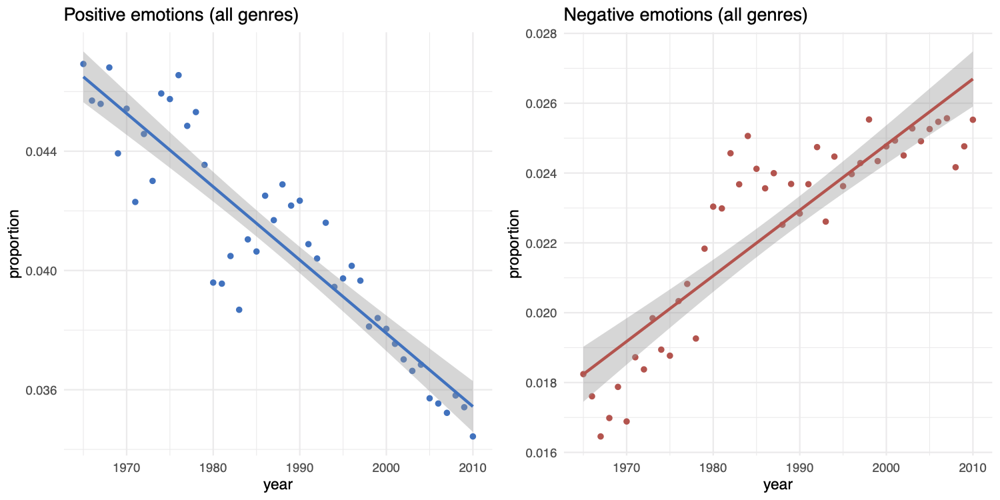
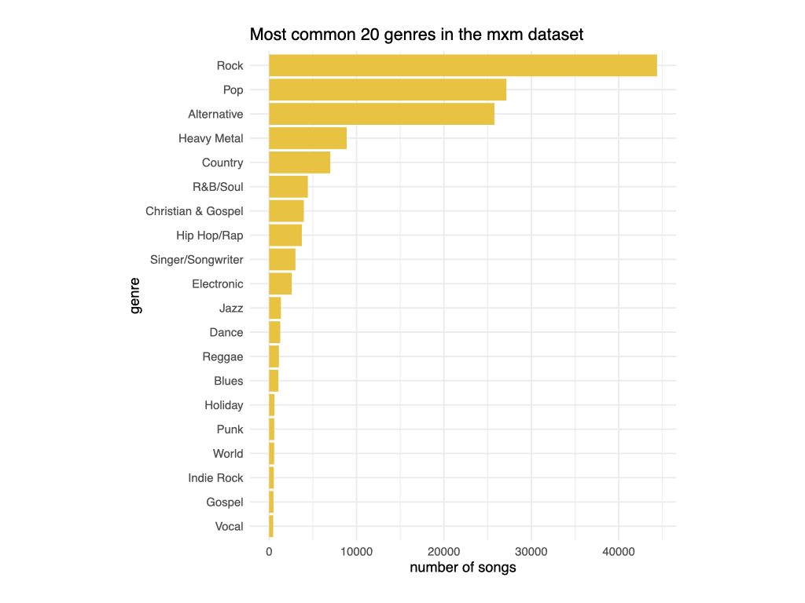
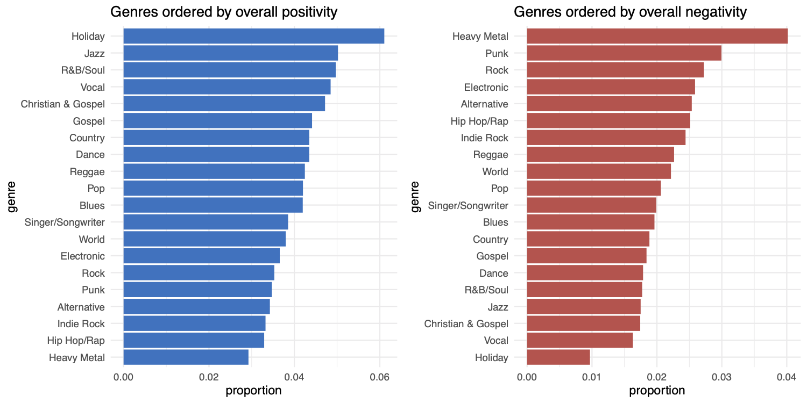
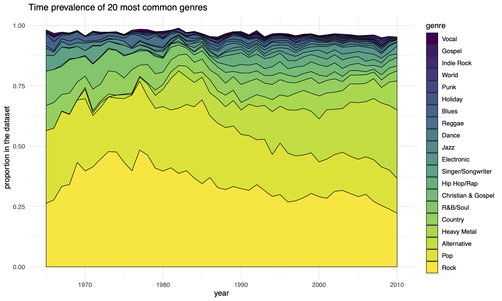
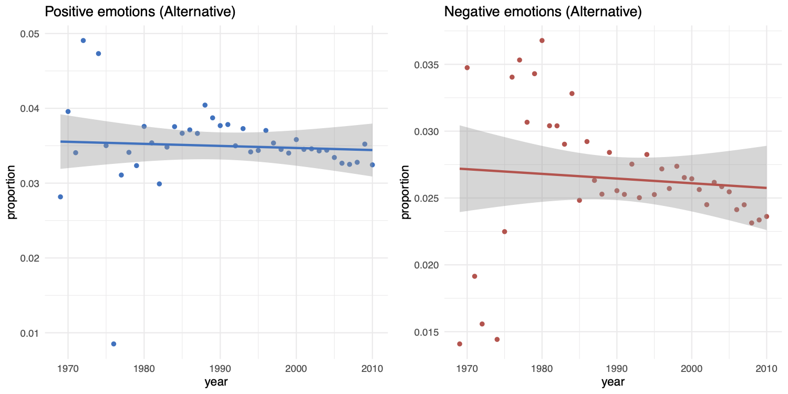
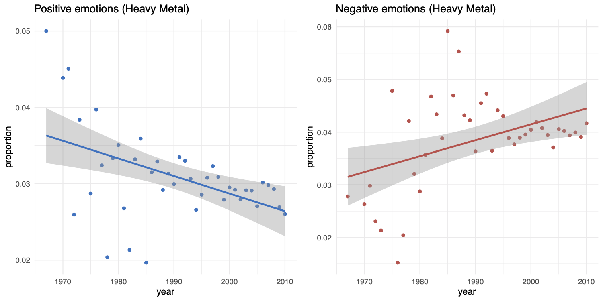
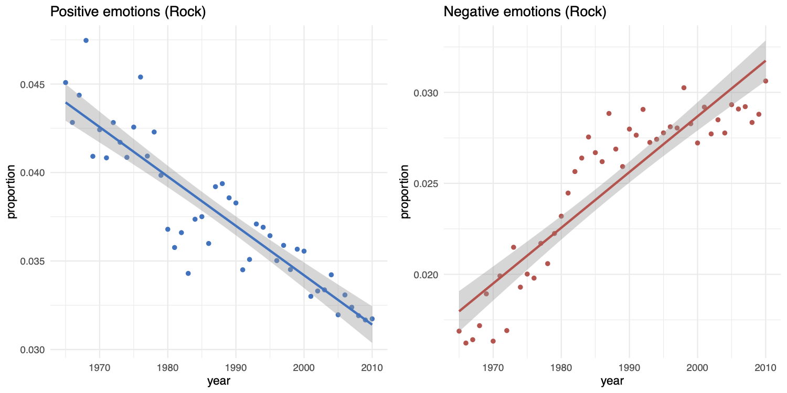
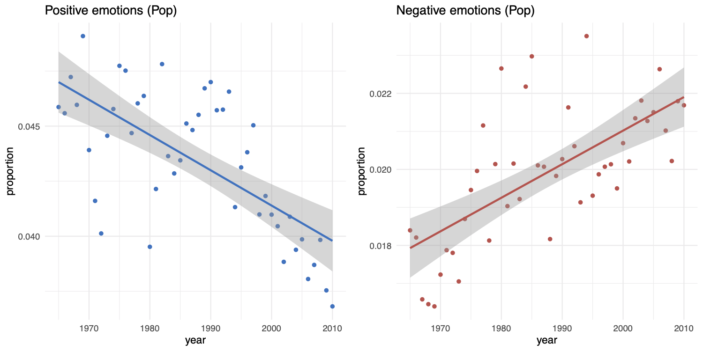

In a recent paper with Lotty Brand and Alex Mesoudi, we documented how the lyrics of popular songs have become sadder in the last few decades. The proportion of words with positive emotional content has decreased and, on the contrary, the proportion of words with negative emotional content has increased, on average, from the 1960s to now. (If you are a reader of this blog you probably already know about all that - if not, see this aeon piece for more about the research).
Several people have suggested that this could be mainly due to the fact that new - sadder or angrier - genres (for example hip-hop) have replaced the genres dominant fifty years ago. This is a sensible hypothesis. In one of the two datasets we used for the main analysis (indicated in the paper as “mxm” dataset), derived from the lyrics in the website musixmatch.com, songs are also tagged with their genre, so it was relatively straightforward to explore the contribution of each genre to the general trend. The R code and the outputs are available in a GitHub repository.
First of all, here the general trends for the “mxm” dataset. (If you are interested, we explain in the aeon piece linked above what the facts that these numbers are small and that the proportion of negative emotion-words is anyway always lower than the proportion of positive emotion-words mean for the importance of the trends.)

Going to the genre analysis, there are 168 possible genre tags in the dataset, on a total of 159,015 songs, but the most common 20 genres account for 99% of all songs.

There are clear difference in the emotional tone of lyrics in different genres, and they correspond to the general intuition: among the sad genres there are indeed recently emerged ones, such as “Heavy Metal”, “Punk”, “Hip Hop/Rap”, “Indie Rock”, or “Alternative”. (“Holiday”, the more positive and less negative genre, is basically the Spotify Christmas playlist of your dreams - or nightmares perhaps.)

We can also look at the prevalence of genres through years. Genres like “Alternative” and “Heavy Metal” did indeed grew in popularity, whereas they were completely absent in the 1960s. On the contrary, positively-connotated genres like “R&B/Soul” and “Christian & Gospel” show a strong decrease. Notice “Hip Hop/Rap” does not appear as growing too much in this dataset, which implies that is not the cause of the increase of negative emotion in lyrics (in this dataset).

This suggests that there is some truth in the idea that the overall increase in sadness is due to the emergence of new, sadder, genres. Genres like “Alternative”, for example, did not show any trend, but their “baseline”, so to speak, corresponds well to the current levels of negative/positive emotions overall.

“Heavy Metal”, consistently with the stereotype, is indeed, on average, a sad genre - as I said on Twitter, “unsurprising sentiment analysis results are good sentiment analysis results”. In fact, in 2010, the proportion of words expressing negative emotions was higher than the proportion of words expressing positive emotions, going beyond the overall results (and showing that the Polyanna principle does not hold everywhere…).

However, we can see that also “Rock” and Pop”, the two most popular genres in the 1960s and still accounting for more than 30% of the total number of songs in 2010, show clear trends going in the overall direction.


This suggests that the overall trend is not only imputable to the introduction of new genres, but that also “classic” genres have become sadder. In the same GitHub repository, you can find the correspondent plots for all the 20 genres analysed.